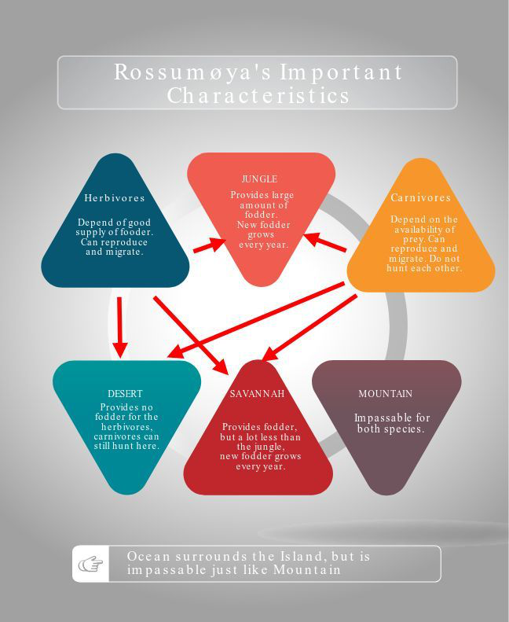

Background¶
PEP8 provides guidelines for writing Python code, dating back to 2001 where it was written by Guido van Rossum, Barry Warsaw and Nick Coghlan. The main goal is to improve readability of code and make it easier for others to understand. Since PEP8 checking is a built in feature, writing code following it’s guidelines is much easier. The maximal line length chosen for the project is 80. Anything above that limit is to be transferred onto the next line using a line break or other methods.
A lot of information comes straight from the project assignment paper. Therefore, it will be referenced once and included in the source list, with all other information from it used in this paper being referenced to the instance of it in the source list and to the keynote.
Rossumøya The island is inhabited by two species, herbivores and carnivores. Herbivores require fodder in order to survive and reproduce, while the carnivores depend on the availability of herbivores. The landscape of the island is divided into 4 different kinds, excluding the Ocean, which is impassable for both species and surrounds the island. These are: Savannah, Desert, Mountain and Jungle.
Here is a visual representation of the most import characteristics on the island:
{kind=link}
Picture 1: The arrows represent the landscape types to which each of the species can migrate.
Ocean: Surrounds the island, impassable for the animals Mountais: Impassable for the animals Desert: Animals can stay in and migrate to the desert, but there is no fodder here. Carnivores can still hunt. Savannah: Offers fodder, but in limited quantity. Fodder grows every year according to “grow_food” function for the Savannah subclass. Jungle: Lots of fodder, maximal fodder growth every year.
Each animal is born with the age of 0 and a weight decided by normal distribution. The overall condition of an animal is described by fitness, calculated by a formula. Fitness is recounted after an animal gives birth, loses weight and eats.
Animals migrate from one cell to another depending on their fitness and fodder availability in neighbouring, non-diagonal cells. First, the migration probability is calculated, where the chance is higher if the fitness of the animal is higher. Afterwards the propensity and probability of the animal fron cell i to j is calculated using formulas given in the task paper. The probability to move to an Ocean or Mountain cell is always 0.
Animals mate if there are at least two same specied animals in a cell, without gender playing any role. The chance to give offspring is calculated by a formula, include the python function “min()”. The birth giving mother loses weight and the animal’s fitness is recalculated.
An animal dies if it’s fitness is 0, or with a probability formula using the fitness value of the animal.
Rossumøya has an annual cycle, with following components:
- Food growth in the Jungle and Savannah cells.
- Feeding, animals eat. First herbivores, then carnivores.
- Procreation, animals give birth.
- Migrations, animals migrate.
- Aging, each animal becomes one year older.
- Loss of weight, all animals lose weight
- Death.